Остров Снов — выпадающие предметы
Предметы из сундуков кастомной игры Dota Остров Снов и что они дают. Всего 81 предметов, 112 вариантов по уровням. Три одинаковых предмета сливаются в следующий уровень. Данные из файлов игры. ← каталог DotaUpUp
Обычные 51
Maconspoon 梅肯斯普3 → след. уровень
L3
Усиление физического урона +1%
Ловкость +200
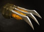
Атакующий коготь 攻击之爪3 → след. уровеньL1
Сила атаки +30
Баомянь 宝冕3 → след. уровень
L2
Полных атрибутов в секунду +1
Блеск 辉耀3 → след. уровень
L4
Здоровье +12000
Все характеристики +600
Наносит магический урон основного атрибута * 75% врагам в пределах 650 ярдов вокруг него каждую секунду.
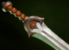
Большой меч 大剑3 → след. уровеньL3
Сила атаки +1200
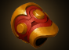
Брекеты на запястье 护腕3 → след. уровеньL2
Шанс критического удара +1,5%
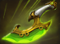
Быстрая вспышка 迅疾闪光3 → след. уровеньL4
Ловкость +2 в секунду
Скорость атаки +20
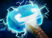
Вихрь 漩涡3 → след. уровеньL4
Ловкость +1800
Скорость атаки +20
Уменьшите собственную броню на 20%. Таким образом, вы получите 0.1 очков пробивания брони за каждое 1 очко снижения брони.
Военный барабан 战鼓3 → след. уровень
L3
Скорость атаки +10
Все характеристики +400
Вспышка процветания 盛势闪光3 → след. уровень
L4
Сила в секунду +2
здоровье в секунду +3
Атака имеет вероятность вызвать у противника кровотечение продолжительностью 3 секунд и увеличить получаемый врагом урон на 5%.
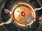
Диск вечности 永恒之盘3 → след. уровеньL4
Здоровье +12000
Сила убийства +1
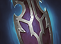
Длинный щит 长盾3 → след. уровеньL4
Эффективность убийств +2%
Все характеристики +600
При убийстве врага есть шанс получить 80 ко всем атрибутам, 80 к урону от атак, 160 здоровья и 0.3 брони, до 600 зарядов.
Духовой ящик 灵匣3 → след. уровень
L4
Интеллект +1800
Количество отскоков +1
Жемчужина, подавляющая яд 淬毒之珠3 → след. уровень
L4
Пробитие брони +10
Скорость атаки +20
Интеллектуальный плащ 智力斗篷3 → след. уровень
L1
Интеллект +30
Камень души 镇魂石3 → след. уровень
L4
Все характеристики +4 в секунду
Здоровье +2 в секунду
Уменьшите скорость атаки 10% и скорость передвижения 10 врагов в радиусе действия 800.
Кольцо 圆环3 → след. уровень
L1
HP +600
Кольцо защиты 守护指环3 → след. уровень
L1
Броня +8
Кольцо плодородия 丰饶之戒3 → след. уровень
L3
Полных атрибутов в секунду +2
Копье Магического Дракона (маленькое) 魔龙枪（小型）3 → след. уровень
L2
Дальность атаки +25
Все характеристики +60
Кулон 挂件3 → след. уровень
L2
Критический урон +3%
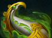
Лук орлиной песни 鹰歌弓3 → след. уровеньL3
Ловкость +300
Ловкость +1 в секунду
Маска вампира 吸血面具3 → след. уровень
L2
Восстановление HP при атаке +130
L4
Сила атаки +1200
Восстановление здоровья от атаки +60
Мистический посох 神秘法杖3 → след. уровень
L3
Интеллект +600
Интеллект в секунду +1
Перчатки силы 力量手套3 → след. уровень
L1
Сила +30
Перчатки ускорения 加速手套3 → след. уровень
L3
Скорость атаки +20
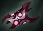
Повязка на руку 臂章3 → след. уровеньL4
Сила атаки +1200
Сила +1800
Каждые 12 секунд получайте щит невосприимчивости к эффектам на 3 секунды.
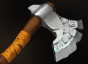
Подавляющий клинок 压制之刃3 → след. уровеньL4
Ловкость +1800
Ловкость при убийстве +1
При убийстве врага восстанавливается 2% недостающего здоровья.
Поднимающий настроение драгоценный камень 振奋宝石3 → след. уровень
L4
Сила атаки +40
Увеличивает урон на 5% врагам, чье текущее здоровье ниже 30%.
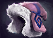
Пушистая шапка 毛毛帽3 → след. уровеньL4
Все характеристики +600
Убийств в секунду +2
Рука Мидаса 迈达斯之手3 → след. уровень
L4
Золото +2 в секунду
Все характеристики +600
Каждая эволюция имеет вероятность получения случайного сокровища 10%.
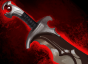
Саньхуа 散华3 → след. уровеньL4
Сила +1800
Снижение урона +2%
+2% восстановление жизни
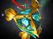
Святой кулон 圣洁吊坠3 → след. уровеньL4
Здоровье +12000
Восстановление здоровья в секунду +0,1%
Уровень выпавшего с героя снаряжения повышается до уровня 1 и недействителен для снаряжения с уровнем выше уровня 3.
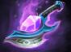
Секретная вспышка 秘奥闪光3 → след. уровеньL4
Интеллект +2 в секунду
Скорость применения навыков +10
Получайте 1 частей случайного снаряжения уровня [ 3 -4 ] каждые 4 минут.
Все игроки каждую секунду получают золотые монеты 3.
Сила Дагона 达贡之神力3 → след. уровень
L4
Интеллект +1800
Ускорение навыков +10
Каждый раз, когда используется навык, существует вероятность обновления его КД с 4%.
Силовая обувь (Интеллект) 动力鞋（智力）3 → след. уровень
L4
Интеллект +1800
Интеллект в секунду +2
Силовая обувь (Сила) 动力鞋（力量）3 → след. уровень
L4
Сила +1800
Сила +2 в секунду
Силовая обувь (ловкость) 动力鞋（敏捷）3 → след. уровень
L4
Ловкость +1800
Ловкость +2 в секунду
 Силовой штаб 原力法杖3 → след. уровень
Силовой штаб 原力法杖3 → след. уровеньL4
Интеллект +1800
Интеллект +1 за каждое убийство
 Сфера Линкольна 林肯法球3 → след. уровень
Сфера Линкольна 林肯法球3 → след. уровеньL4
Все характеристики +600
Все характеристики +1 за каждое убийство секунда
Эффективность опыта +4%
Тапочки ловкости 敏捷便鞋3 → след. уровень
L1
Ловкость +30
Теневой храм 影之灵龛3 → след. уровень
L4
Здоровье +12000
Здоровье +2 в секунду
Когда здоровье превышает 50%, физический урон увеличивается на 20%.
Когда здоровье ниже 50%, восстановление здоровья увеличивается на 20%.
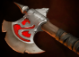
Топор Разбойника 掠夺者之斧3 → след. уровеньL3
Здоровье +6000
Сила +600
Узор духа ветра 风灵之纹3 → след. уровень
L4
Ловкость +1800
Количество множественных попаданий +1
Уничтожить 黯灭3 → след. уровень
L3
Сила атаки +300
Сила атаки +1 в секунду
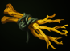
Филиалы 树枝3 → след. уровеньL1
Все характеристики +20
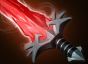
Хрустальный меч 水晶剑3 → след. уровеньL4
Шанс критического удара +2%
Урон от критического удара +6%
Когда его собственное здоровье ниже, чем 30%, он немедленно убегает в тень, становится неуязвимым на время и увеличивает скорость атаки 30, длящуюся 3 секунд, с временем охлаждения 30 секунд.
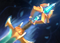
Хуэйгуан 慧光3 → след. уровеньL4
Усиление магического урона +1%
Интеллект +1800
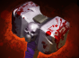
Череп Дробилка 碎颅锤3 → след. уровеньL4
Сила +1800
Усиление физического урона +2%
Шлем Тиеи 铁意头盔3 → след. уровень
L2
Броня +30
Якша 夜叉3 → след. уровень
L4
Ловкость +1800
Усиление физического урона +2%
Обычные атаки имеют вероятность 5% нанести урон, умноженный на 2.
Редкие 30
Блеск 辉耀3 → след. уровень
L5
HP +25000
Все характеристики +1600
Увеличение HP +3%
L6
Здоровье +80000
Все характеристики +4800
Увеличение здоровья +4%
Наносит магический урон основного атрибута * 100% врагам в пределах 650 ярдов вокруг него каждую секунду.
Быстрая вспышка 迅疾闪光3 → след. уровень
L5
Ловкость в секунду +3
Скорость атаки +20
Усиление физического урона +3%
L6
Ловкость в секунду +4
Скорость атаки +40
Усиление физического урона +4%
Вихрь 漩涡3 → след. уровень
L5
Ловкость +4000
Скорость атаки +20
Пробитие брони +20
L6
Ловкость +12000
Скорость атаки +40
Пробитие брони +40
Уменьшите собственную броню на 20%. Таким образом, вы получите 0.3 очков пробивания брони за каждое 1 очко снижения брони.
Вспышка процветания 盛势闪光3 → след. уровень
L5
Сила в секунду +3
здоровье в секунду +4
Снижение урона +3%
L6
Сила в секунду +4
Здоровье в секунду +6
Снижение урона +4%
Атака имеет вероятность вызвать у противника кровотечение продолжительностью 3 секунд и увеличить получаемый врагом урон на 10%.
Диск вечности 永恒之盘3 → след. уровень
L5
Здоровье +25000
Снижение урона +3%
Сила за убийство +1.5
L6
Здоровье +80000
Снижение урона +4%
Сила за убийство +2
Длинный щит 长盾3 → след. уровень
L5
Эффективность убийств +3%
Убийств в секунду +2
Все характеристики +1600
L6
Эффективность убийств +4%
Убийств в секунду +4
Все характеристики +4800
При убийстве врага есть шанс получить 90 ко всем атрибутам, 90 к урону от атак, 180 здоровья и 0.5 брони, до 600 зарядов.
Духовой ящик 灵匣3 → след. уровень
L5
Интеллект +4000
Количество рикошетных атак +2
Урон от рикошета +10%
L6
Интеллект +12000
Количество рикошетов +2
Урон от рикошетов +20%
Жемчужина, подавляющая яд 淬毒之珠3 → след. уровень
L5
Пробитие брони +20
Скорость атаки +20
Дальность атаки +60
L6
Пробивание брони +40
Скорость атаки +40
Дальность атаки +120
Камень души 镇魂石3 → след. уровень
L5
Все атрибуты в секунду +5
Здоровье в секунду +3
Повышение эффективности опыта +3%
L6
Все характеристики в секунду +6
Здоровье в секунду +4
Эффективность опыта +4%
Уменьшите скорость атаки 15% и скорость передвижения 15 врагов в радиусе действия 800.
Маска вампира 吸血面具3 → след. уровень
L5
Сила атаки +3800
Восстановление здоровья от атаки +160
Дальность атаки +45
L6
Сила атаки +9500
Восстановление HP за атаку +400
Дальность атаки +120
Увеличить наносимый урон. При каждом увеличении расстояния от цели по коду 100 наносимый ей урон увеличивается на 1%, с максимальным значением 20%.
Повязка на руку 臂章3 → след. уровень
L5
Сила атаки +3800
Сила +4800
Атака в секунду +1
L6
Сила атаки +9500
Сила +12000
Атака в секунду +3
Каждые 9 секунд получайте щит невосприимчивости к эффектам на 3 секунды.
Подавляющий клинок 压制之刃3 → след. уровень
L5
Ловкость +4000
Ловкость при убийстве +1.5
Усиление физического урона +3%
L6
Ловкость +12000 Ловкость при убийстве +2 Усиление физического урона +4%
При убийстве врага восстанавливается 4% недостающего здоровья.
Поднимающий настроение драгоценный камень 振奋宝石3 → след. уровень
L5
Скорость атаки +60
L6
Скорость атаки +120
Увеличивает урон на 10% врагам, чье текущее здоровье ниже 40%.
Пушистая шапка 毛毛帽3 → след. уровень
L5
Все характеристики +1600
Убийств в секунду +3
Золота в секунду +3
L6
Все характеристики +4800
Убийства в секунду +4
Золото в секунду +4
Рука Мидаса 迈达斯之手3 → след. уровень
L5
Золото в секунду +3
Все характеристики +1600
Эффективность использования золота +3%
L6
Золото в секунду +5
Все характеристики +4800
Эффективность золота +4%
Каждая эволюция имеет вероятность получения случайного сокровища 15%.
Саньхуа 散华3 → след. уровень
L5
Сила +4000
Снижение урона +3%
Броня +20
L6
Сила +12000
Снижение урона +4%
Броня +40
+2.5% восстановление жизни
Святой кулон 圣洁吊坠3 → след. уровень
L5
HP +25000
Восстановление HP в секунду +0,2%
Увеличение HP +3%
L6
HP +80000
Восстановление HP в секунду +0.4%
Увеличение HP +4%
Уровень выпавшего с героя снаряжения повышается до уровня 1 и недействителен для снаряжения с уровнем выше уровня 4.
Секретная вспышка 秘奥闪光3 → след. уровень
L5
Интеллект в секунду +3
Скорость применения навыков +15
Усиление магического урона +3%
L6
Интеллект +4 в секунду
Ускорение навыков +40
Усиление магического урона +4%
Получайте 1 частей случайного снаряжения уровня [ 4 -5 ] каждые 4 минут.
Все игроки каждую секунду получают золотые монеты 6.
Сила Дагона 达贡之神力3 → след. уровень
L5
Интеллект +4000
Ускорение навыков +15
Усиление магического урона +3%
L6
Интеллект +12000
Навык Ускорение +40
Усиление магического урона +4%
Каждый раз, когда используется навык, существует вероятность обновления его КД с 8%.
Силовая обувь (Интеллект) 动力鞋（智力）3 → след. уровень
L5
Интеллект +4000
Интеллект в секунду +3
Интеллект за убийство +1
L6
Интеллект +12000
Интеллект в секунду +4
Интеллект за убийство +2
Силовая обувь (Сила) 动力鞋（力量）3 → след. уровень
L5
Сила +4000
Сила в секунду +3
Сила за убийство +1
L6
Сила +12000
Сила в секунду +4
Сила за убийство +2
Силовая обувь (ловкость) 动力鞋（敏捷）3 → след. уровень
L5
Ловкость +4000
Ловкость в секунду +3
Ловкость за убийство +1
L6
Ловкость +12000
Ловкость в секунду +4
Ловкость за убийство +2
Силовой штаб 原力法杖3 → след. уровеньL5
Интеллект +4000
Интеллект за убийство +1,5
Ускорение навыков +10
L6
Интеллект +12000
Интеллект за убийство врага +2
Ускорение навыков +30
Сфера Линкольна 林肯法球3 → след. уровеньL5
Все характеристики +1600
Все характеристики в секунду +2
Все характеристики за убийство +0.5
L6
Все характеристики +4800
Все характеристики +4 в секунду
Все характеристики +1 за убийство
Эффективность опыта +8%
Теневой храм 影之灵龛3 → след. уровень
L5
HP +25000
HP +3 в секунду
Увеличение HP +3%
L6
Здоровье +80000 в секунду Здоровье +4
Усиление здоровья +4%
Когда здоровье превышает 50%, физический урон увеличивается на 30%.
Когда здоровье ниже 50%, восстановление здоровья увеличивается на 30%.
Узор духа ветра 风灵之纹3 → след. уровень
L5
Ловкость +4000
Количество множественных попаданий +2
Урон от множественных попаданий +10%
L6
Ловкость +12000
Количество множественных ударов +2
Урон от множественных ударов +20%
Хрустальный меч 水晶剑3 → след. уровень
L5
Критический удар Шанс +4%
Урон от критического удара +10%
Итоговый урон +3%
L6
Шанс критического удара +6%
Урон от критического удара +15%
Итоговый урон +5%
Когда его собственное здоровье ниже, чем 30%, он немедленно убегает в тень, становится неуязвимым на время и увеличивает скорость атаки 60, длящуюся 3 секунд, с временем охлаждения 20 секунд.
Хуэйгуан 慧光3 → след. уровень
L5
Увеличение магического урона +3%
Интеллект +4000
Интеллект за убийство +1
L6
Усиление магического урона +3%
Интеллект +12000
Интеллект за убийство +3
Череп Дробилка 碎颅锤3 → след. уровень
L5
Сила +4000
Усиление физического урона +3%
Итоговый урон +1%
L6
Сила +12000
Усиление физического урона +4%
Итоговый урон +3%
Якша 夜叉3 → след. уровень
L5
Ловкость +4000
Усиление физического урона +3%
Ловкость в секунду +3
L6
Ловкость +12000
Усиление физического урона +4%
Ловкость в секунду +4
Обычные атаки имеют вероятность 5% нанести урон, умноженный на 3.
Неофициальный справочник. Названия и эффекты из локализации игры, значения могут меняться с обновлениями.